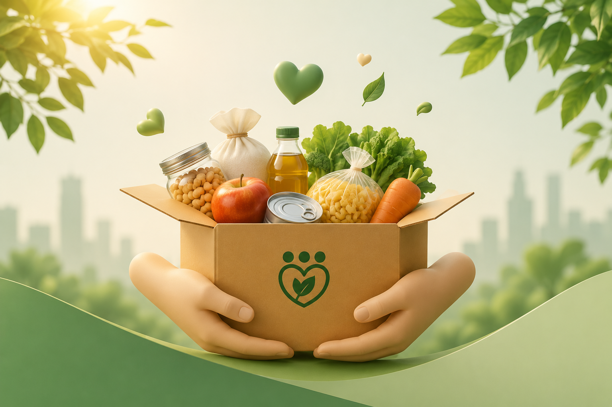

Meals Donated
12,500+
Join us in reducing food waste by connecting surplus food from individuals and restaurants with trusted NGOs. Together, we can turn extra meals into hope for people in need.

12,500+
85+
45,000+
8,200 kg
List your surplus food, whether from home or a restaurant.
We match your donation with the nearest NGO that needs it.
The NGO arranges quick and safe pickup of the food.
Your donation reaches people in need and helps reduce waste.